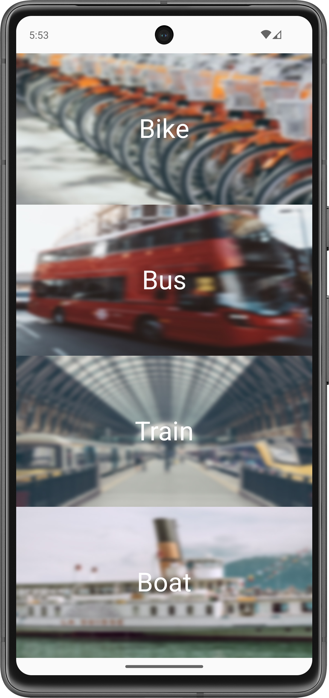
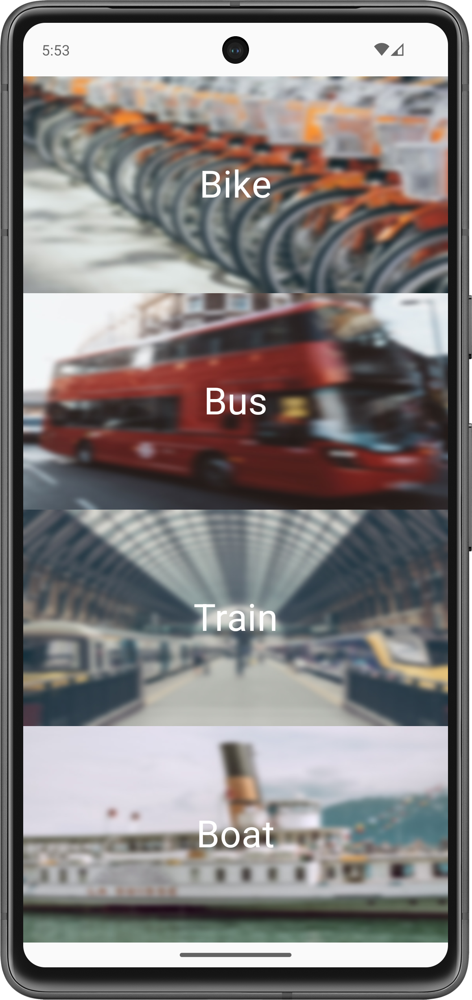

Labor 02 - Felhasználói felület készítés¶
Bevezető¶
A labor során egy tömegközlekedési vállalat számára megálmodott alkalmazás vázát készítjük el. Az alkalmazással a felhasználók különböző járművekre vásárolhatnak majd bérleteket. Az üzleti logikát (az authentikációt, a bevitt adatok ellenőrzését, a fizetés lebonyolítását) egyelőre csak szimulálni fogjuk, a labor fókusza a felületek és a köztük való navigáció elkészítése lesz.
 



IMSc
A laborfeladatok sikeres befejezése után az IMSc feladat-ot megoldva 2 IMSc pont szerezhető.
Előkészületek¶
A feladatok megoldása során ne felejtsd el követni a feladat beadás folyamatát.
Git repository létrehozása és letöltése¶
-
Moodle-ben keresd meg a laborhoz tartozó meghívó URL-jét és annak segítségével hozd létre a saját repository-dat.
-
Várd meg, míg elkészül a repository, majd checkout-old ki.
Egyetemi laborokban, ha a checkout során nem kér a rendszer felhasználónevet és jelszót, és nem sikerül a checkout, akkor valószínűleg a gépen korábban megjegyzett felhasználónévvel próbálkozott a rendszer. Először töröld ki a mentett belépési adatokat (lásd itt), és próbáld újra.
-
Hozz létre egy új ágat
megoldasnéven, és ezen az ágon dolgozz. -
A
neptun.txtfájlba írd bele a Neptun kódodat. A fájlban semmi más ne szerepeljen, csak egyetlen sorban a Neptun kód 6 karaktere.
Android, Java, Kotlin
Az Android hagyományosan Java nyelven volt fejleszthető, azonban az utóbbi években a Google átállt a Kotlin nyelvre. Ez egy sokkal modernebb nyelv, mint a Java, sok olyan nyelvi elemet ad, amit kényelmes használni, valamint új nyelvi szabályokat, amikkel például elkerülhetőek a Java nyelven gyakori NullPointerException jellegű hibák.
Másrészről viszont a nyelv sok mindenben tér el a hagyományosan C jellegű szintaktikát követő nyelvektől, amit majd látni is fogunk. A labor előtt érdemes megismerkedni a nyelvvel, egyrészt a fent látható linken, másrészt ezt az összefoglaló cikket átolvasva.
Projekt létrehozása¶
Első lépésként indítsuk el az Android Studio-t, majd:
- Hozzunk létre egy új projektet, válasszuk az Empty Activity lehetőséget.
- A projekt neve legyen
PublicTransport, a kezdő packagehu.bme.aut.android.publictransport, a mentési hely pedig a kicheckoutolt repository-n belül egy külön mappa. - Nyelvnek válasszuk a Kotlin-t.
- A minimum API szint legyen API21: Android 5.0.
- Az instant app támogatást, valamint a Use legacy android.support libraries pontot ne pipáljuk be.
A projekt létrehozásakor, a fordító keretrendszernek rengeteg függőséget kell letöltenie. Amíg ez nem történt meg, addig a projektben nehézkes navigálni, hiányzik a kódkiegészítés, stb... Éppen ezért ezt tanácsos kivárni, azonban ez akár 5 percet is igénybe vehet az első alkalommal! Az ablak alján látható információs sávot kell figyelni.
Láthatjuk, hogy létrejött egy projekt, amiben van egy Activity, MainActivity néven, valamint egy hozzá tartozó layout fájl activity_main.xml néven. Nevezzük ezeket át LoginActivity-re, illetve activity_login.xml-re. Ezt a jobb gomb > Refactor > Rename menüpontban lehet megtenni (vagy Shift+F6). Az átnevezésnél található egy Scope nevű beállítás. Ezt állítsuk úgy be, hogy csak a jelenlegi projekten belül nevezze át a dolgokat (Project Files).
Érdemes megfigyelni, hogy az átnevezés "okos". A layout fájl átnevezése esetén a LoginActivity-ben nem kell kézzel átírnunk a layout fájl azonosítóját, mert ezt a rendszer megteszi. Ugyanez igaz a manifest fájlra is.
Splash képernyő (0.5 pont)¶
Az első Activity-nk a nevéhez híven a felhasználó bejelentkezéséért lesz felelős, azonban még mielőtt ez megjelenik a felhasználó számára, egy splash képernyővel fogjuk üdvözölni. Ez egy elegáns megoldás arra, hogy az alkalmazás betöltéséig ne egy egyszínű képernyő legyen a felhasználó előtt, hanem egy tetszőleges saját design.

Először töltsük le az alkalmazáshoz képeit tartalmazó tömörített fájlt, ami tartalmazza az összes képet, amire szükségünk lesz. A tartalmát másoljuk be az app/src/main/res mappába (ehhez segít, ha Android Studio-ban bal fent a szokásos Android nézetről a Project nézetre váltunk, esetleg a mappán jobb klikk > Show in Explorer).
Hozzunk létre egy új XML fájlt a drawable mappában splash_background.xml néven. Ez lesz a splash képernyőnkön megjelenő grafika. A tartalma az alábbi legyen:
<?xml version="1.0" encoding="utf-8"?>
<layer-list xmlns:android="http://schemas.android.com/apk/res/android">
<item>
<bitmap
android:gravity="fill_horizontal|clip_vertical"
android:src="@drawable/splash_image"/>
</item>
</layer-list>
Jelen esetben egyetlen képet teszünk ide, de további item-ek felvételével komplexebb dolgokat is összeállíthatnánk itt. Tipikus megoldás például egy egyszínű háttér beállítása, amin az alkalmazás ikonja látszik.
Nyissuk meg a values/themes.xml fájlt. Ez definiálja az alkalmazásban használt különböző témákat. A splash képernyőhöz egy új témát fogunk létrehozni, amelyben az előbb létrehozott drawable-t állítjuk be az alkalmazásablakunk hátterének (mivel ez látszik valójában, amíg nem töltött be a UI többi része). Ezt így tehetjük meg:
<style name="SplashTheme" parent="Theme.AppCompat.NoActionBar">
<item name="android:windowBackground">@drawable/splash_background</item>
</style>
A fenti témát illesszük be a night minősítővel ellátott themes.xml fájlba is.
A téma használatához az alkalmazásunk manifest fájlját (AndroidManifest.xml) kell módosítanunk. Ezt megnyitva láthatjuk, hogy jelenleg a teljes alkalmazás az AppTheme nevű témát használja.
<application
...
android:theme="@style/Theme.PublicTransport" >
Mi ezt nem akarjuk megváltoztatni, hanem csak a LoginActivity-nek akarunk egy új témát adni. Ezt így tehetjük meg:
<activity
android:name=".LoginActivity"
android:theme="@style/SplashTheme">
...
</activity>
Mivel a betöltés után már nem lesz szükségünk erre a háttérre, a LoginActivity.kt fájlban a betöltés befejeztével visszaállíthatjuk az eredeti témát, amely fehér háttérrel rendelkezik. Ezt az onCreate függvény elején tegyük meg, még a super hívás előtt:
override fun onCreate(savedInstanceState: Bundle?) {
setTheme(R.style.Theme_PublicTransport)
...
}
Most már futtathatjuk az alkalmazást, és betöltés közben látnunk kell a berakott képet. A splash képernyő általában akkor hasznos, ha az alkalmazás inicializálása sokáig tart. Mivel a mostani alkalmazásunk még nagyon gyorsan indul el, szimulálhatunk egy kis töltési időt az alábbi módon:
override fun onCreate(savedInstanceState: Bundle?) {
try {
Thread.sleep(1000)
} catch (e: InterruptedException) {
e.printStackTrace()
}
setTheme(R.style.Theme_PublicTransport);
...
}
BEADANDÓ (0.5 pont)
Készíts egy képernyőképet, amelyen látszik a splash képernyő (emulátoron, készüléket tükrözve vagy képernyőfelvétellel), egy ahhoz tartozó kódrészlet, valamint a neptun kódod a kódban valahol kommentként. A képet a megoldásban a repository-ba f1.png néven töltsd föl.
A képernyőkép szükséges feltétele a pontszám megszerzésének.
Login képernyő (0.5 pont)¶
Most már elkészíthetjük a login képernyőt. A felhasználótól egy email címet, illetve egy számokból álló jelszót fogunk bekérni, és egyelőre csak azt fogjuk ellenőrizni, hogy beírt-e valamit a mezőkbe.
Az activity_login.xml fájlba kerüljön az alábbi kód. Alapértelmezetten egy grafikus szerkesztő nyílik meg, ezt át kell állítani a szöveges szerkesztőre. Ezt az Android Studio verziójától függően a jobb felső, vagy a jobb alsó sarokban lehet megtenni:
<?xml version="1.0" encoding="utf-8"?>
<LinearLayout xmlns:android="http://schemas.android.com/apk/res/android"
xmlns:tools="http://schemas.android.com/tools"
android:layout_width="match_parent"
android:layout_height="match_parent"
android:layout_margin="16dp"
android:orientation="vertical"
tools:context=".LoginActivity">
<TextView
android:layout_width="wrap_content"
android:layout_height="wrap_content"
android:layout_gravity="center"
android:layout_margin="16dp"
android:text="Please enter your credentials" />
<TextView
android:layout_width="wrap_content"
android:layout_height="wrap_content"
android:text="Email" />
<EditText
android:id="@+id/etEmailAddress"
android:layout_width="match_parent"
android:layout_height="wrap_content" />
<TextView
android:layout_width="wrap_content"
android:layout_height="wrap_content"
android:text="Password" />
<EditText
android:id="@+id/etPassword"
android:layout_width="match_parent"
android:layout_height="wrap_content" />
<Button
android:id="@+id/btnLogin"
android:layout_width="wrap_content"
android:layout_height="wrap_content"
android:layout_gravity="center"
android:text="Login" />
</LinearLayout>
- A használt elrendezés teljesen lineáris, csak egymás alá helyezünk el benne különböző View-kat egy
LinearLayout-ban. - Az
EditText-eknek és aButton-nek adtunk ID-kat, hogy később kódból elérjük őket.
Az alkalmazást újra futtatva megjelenik a layout, azonban most még bármilyen szöveget be tudnunk írni a két beviteli mezőbe. Az EditText osztály lehetőséget ad számos speciális input kezelésére, XML kódban az inputType attribútum megadásával. Jelen esetben az email címet kezelő EditText-hez a textEmailAddress értéket, a másikhoz pedig a numberPassword értéket használhatjuk.
<EditText
android:id="@+id/etEmailAddress"
...
android:inputType="textEmailAddress" />
<EditText
android:id="@+id/etPassword"
...
android:inputType="numberPassword" />
Ha most kipróbáljuk az alkalmazást, már látjuk a beállítások hatását:
- A legtöbb billentyűzettel az első mezőhöz most már megjelenik a
@szimbólum, a másodiknál pedig csak számokat írhatunk be. - Mivel a második mezőt jelszó típusúnak állítottuk be, a karakterek a megszokott módon elrejtésre kerülnek a beírásuk után.
Még egy dolgunk van ezen a képernyőn, az input ellenőrzése. Ezt a LoginActivity.kt fájlban tehetjük meg. A layout-unkat alkotó View-kat az onCreate függvényben lévő setContentView hívás után tudjuk először elérni.
Ezt csinálhatnánk a klasszikus módon, azaz példányosítunk egy gombot, a findViewById metódussal referenciát szerzünk a felületen lévő vezérlőre, és a példányon beállítjuk az eseménykezelőt:
val btnLogin = findViewById<Button>(R.id.btnLogin)
btnLogin.setOnClickListener {
...
}
Azonban a findViewById hívásnak számos problémája van. Ezekről bővebben az előadáson lesz szó (pl.: Null safety, type safety). Ezért e helyett "nézetkötést", azaz ViewBinding-ot fogunk használni.
A ViewBinding a kódítást könnyíti meg számunkra. Amennyiben ezt használjuk, az automatikusan generálódó binding osztályokon keresztül közvetlen referencián keresztül tudunk elérni minden ID-val rendelkező erőforrást az XML fájljainkban.
Először is be kell kapcsolnunk a modulunkra a ViewBinding-ot. Az app modulhoz tartozó build.gradle fájlban az android tagen belülre illesszük be az engedélyezést (Ezek után kattintsunk jobb felül a Sync Now gombra.):
android {
...
buildFeatures {
viewBinding true
}
}
Ezzel után már a teljes modulunkban automatikusan elérhetővé vált a ViewBinging.
ViewBinding
Ebben az esetben a modul minden egyes XML layout fájljához generálódik egy úgynevezett binding osztály. Minden binding osztály tartalmaz referenciát az adott XML layout erőforrás gyökér elemére és az összes ID-val rendelkező view-ra. A generált osztály neve úgy áll elő, hogy az XML layout nevét Pascal formátumba alakítja a rendszer és a végére illeszti, hogy Binding. Azaz például a result_profile.xml erőforrásfájlból az alábbi binding osztály generálódik: ResultProfileBinding.
<LinearLayout ... >
<TextView android:id="@+id/name" />
<ImageView android:cropToPadding="true" />
<Button android:id="@+id/button"
android:background="@drawable/rounded_button" />
</LinearLayout>
A generált osztálynak két mezője van. A name id-val rendelkező TextView és a button id-jú Button. A layout-ban szereplő ImageView-nak nincs id-ja, ezért nem szerepel a binding osztályban.
Minden generált osztály tartalmaz egy getRoot() metódust, amely direkt referenciaként szolgál a layout gyökerére. A példában a getRoot() metódus a LinearLayout-tal tér vissza.
A ViewBinding használatához tehát az Activity-nkben csak példányosítanunk kell a binding objektumot, amin keresztül majd elérhetjük az erőforrásainkat.
A binding példány működéséhez három dolgot kell tennünk:
- A generált
bindingosztály statikusinflatefüggvényével példányosítjuk abindingosztályunkat azActivity-hez. - Referenciát szerzünk a gyökérelemre. Ezt kétféleképpen is megtehetjük. Vagy meghívjuk a
getRoot()metódust, vagy a Kotlin property syntax-ot használva. - Ezt a gyökérelemet odaadjuk a
setContentView()függvénynek, hogy ez legyen az aktív view a képernyőn:
private lateinit var binding: ActivityLoginBinding
override fun onCreate(savedInstanceState: Bundle?) {
try {
Thread.sleep(1000)
} catch (e: InterruptedException) {
e.printStackTrace()
}
setTheme(R.style.Theme_PublicTransport)
super.onCreate(savedInstanceState)
binding = ActivityLoginBinding.inflate(layoutInflater)
setContentView(binding.root)
}
lateinit
A lateinit kulcsszóval megjelölt property-ket a fordító megengedi inicializálatlanul hagyni az osztály konstruktorának lefutása utánig, anélkül, hogy nullable-ként kéne azokat megjelölnünk (ami később kényelmetlenné tenné a használatukat, mert mindig ellenőriznünk kéne, hogy null-e az értékük). Ez praktikus olyan esetekben, amikor egy osztály inicializálása nem a konstruktorában történik (például ahogy az Activity-k esetében az onCreate-ben), mert később az esetleges null eset lekezelése nélkül használhatjuk majd a property-t. A lateinit használatával átvállaljuk a felelősséget a fordítótól, hogy a property-t az első használata előtt inicializálni fogjuk - ellenkező esetben kivételt kapunk.
Ezek után már be is állíthatjuk a gombunk eseménykezelőit:
binding.btnLogin.setOnClickListener {
if(binding.etEmailAddress.text.toString().isEmpty()) {
binding.etEmailAddress.requestFocus()
binding.etEmailAddress.error = "Please enter your email address"
}
else if(binding.etPassword.text.toString().isEmpty()) {
binding.etPassword.requestFocus()
binding.etPassword.error = "Please enter your password"
}
else {
// TODO login
}
}
Amennyiben valamelyik EditText üres volt, a requestFocus függvény meghívásával aktívvá tesszük, majd az error property beállításával kiírunk rá egy hibaüzenetet. Ez egy kényelmes, beépített megoldás input hibák jelzésére. Így nem kell például egy külön TextView-t használnunk erre a célra, és abba beleírni a fellépő hibát. Ezt már akár ki is próbálhatjuk, bár helyes adatok megadása esetén még nem történik semmi.
setOnClickListener
A setOnClickListener függvény valójában olyan objektumot vár paraméterként, ami megvalósítja a View.OnClickListener interfészt. Ezt Java-ban anonim objektumokkal szokás megoldani, amit meg lehet tenni Kotlin nyelven is.Ehelyett azonban érdemesebb kihasználni, hogy a Kotlin rendelkezik igazi függvény típusokkal, így megadható egy olyan lambda kifejezés, amelynek a fejléce megegyezik az elvárt interfész egyetlen függvényének fejlécével. Ez alapján pedig a SAM conversion nevű nyelvi funkció a háttérben a lambda alapján létrehozza a megfelelő View.OnClickListener példányt.
BEADANDÓ (0.5 pont)
Készíts egy képernyőképet, amelyen látszik a login képernyő (emulátoron, készüléket tükrözve vagy képernyőfelvétellel), egy ahhoz tartozó kódrészlet, valamint a neptun kódod az e-mail mezőbe begépelve. A képet a megoldásban a repository-ba f2.png néven töltsd föl.
A képernyőkép szükséges feltétele a pontszám megszerzésének.
Lehetőségek listája (1 pont)¶
A következő képernyőn a felhasználó a különböző járműtípusok közül válaszhat. Egyelőre három szolgáltatás működik a fiktív vállalatunkban: biciklik, buszok illetve vonatok.
Hozzunk ehhez létre egy új Activity-t (a package-ünkön jobb klikk > New > Activity > Empty Activity), nevezzük el ListActivity-nek. Most, hogy ez már létezik, menjünk vissza a LoginActivity kódjában lévő TODO-hoz, és indítsuk ott el ezt az új Activity-t:
binding.btnLogin.setOnClickListener {
...
else {
startActivity(Intent(this, ListActivity::class.java))
}
}
Folytassuk a layout elkészítésével a munkát, az activity_list.xml tartalmát cseréljük ki az alábbira:
<?xml version="1.0" encoding="utf-8"?>
<LinearLayout xmlns:android="http://schemas.android.com/apk/res/android"
xmlns:tools="http://schemas.android.com/tools"
android:layout_width="match_parent"
android:layout_height="match_parent"
android:orientation="vertical"
android:weightSum="3"
tools:context=".ListActivity">
<FrameLayout
android:layout_width="match_parent"
android:layout_height="0dp"
android:layout_weight="1">
</FrameLayout>
<FrameLayout
android:layout_width="match_parent"
android:layout_height="0dp"
android:layout_weight="1">
</FrameLayout>
<FrameLayout
android:layout_width="match_parent"
android:layout_height="0dp"
android:layout_weight="1">
</FrameLayout>
</LinearLayout>
Ismét egy függőleges LinearLayout-ot használunk, most azonban súlyokat adunk meg benne. A gyökérelemben megadjuk, hogy a súlyok összege (weightSum) 3 lesz, és mindhárom gyerekének 1-es súlyt (layout_weight), és 0dp magasságot adunk. Ezzel azt érjük el, hogy három egyenlő részre osztjuk a képernyőt, amit a három FrameLayout fog elfoglalni.
A FrameLayout egy nagyon egyszerű és gyors elrendezés, amely lényegében csak egymás tetejére teszi a gyerekeiként szereplő View-kat. Ezeken belül egy-egy képet, illetve azokon egy-egy feliratot fogunk elhelyezni. A három sávból az elsőt így készíthetjük el:
<FrameLayout
android:layout_width="match_parent"
android:layout_height="0dp"
android:layout_weight="1">
<ImageButton
android:id="@+id/btnBike"
android:layout_width="match_parent"
android:layout_height="match_parent"
android:gravity="center"
android:padding="0dp"
android:scaleType="centerCrop"
android:src="@drawable/bikes" />
<TextView
android:layout_width="wrap_content"
android:layout_height="wrap_content"
android:layout_gravity="center"
android:text="@string/bike"
android:textColor="#FFF"
android:textSize="36sp" />
</FrameLayout>
Az itt használt ImageButton pont az, aminek hangzik: egy olyan gomb, amelyen egy képet helyezhetünk el. Azt, hogy ez melyik legyen, az src attribútummal adtuk meg. Az utána szereplő TextView fehér színnel és nagy méretű betűkkel a kép fölé fog kerülni, ebbe írjuk bele a jármű nevét.
A @string/bike hibát jelez. Mint látható, itt sem egy konkrét szöveget, hanem egy hivatkozást használunk. Ez azért hasznos, mert így egy helyre tudjuk szervezni a szöveges erőforrásainkat (strings.xml), így egyszerűen lokalizálhatjuk az alkalmazásunkat erőforrásminősítők segítségével.
Adjunk tehát értéket a @strings/bike elemnek. Ezt megtehetjük kézzel is a strings.xml-ben, de Alt+Enterrel a helyi menüben is:
<string name="bike">Bike</string>
Töltsük ki ehhez hasonló módon a másik két FrameLayout-ot is, ID-ként használjuk a @+id/btnBus és @+id/btnTrain értékeket, képnek pedig használhatjuk a korábban már bemásolt @drawable/bus és @drawable/trains erőforrásokat. Ne felejtsük el a TextView-k szövegét is értelemszerűen átírni.
Próbáljuk ki az alkalmazásunkat, bejelentkezés után a most elkészített lista nézethez kell jutnunk.
BEADANDÓ (1 pont)
Készíts egy képernyőképet, amelyen látszik a jármúvek listája (emulátoron, készüléket tükrözve vagy képernyőfelvétellel), egy ahhoz tartozó kódrészlet, valamint a neptun kódod a kódban valahol kommentként. A képet a megoldásban a repository-ba f3.png néven töltsd föl.
A képernyőkép szükséges feltétele a pontszám megszerzésének.
Részletes nézet (1 pont)¶
Miután a felhasználó kiválasztotta a kívánt közlekedési eszközt, néhány további opciót fogunk még felajánlani számára. Ezen a képernyőn fogja kiválasztani a bérleten szereplő dátumokat, illetve a rá vonatkozó kedvezményt, amennyiben van ilyen.
Hozzuk létre ezt az új Activity-t DetailsActivity néven, a layout-ját kezdjük az alábbi kóddal:
<?xml version="1.0" encoding="utf-8"?>
<ScrollView xmlns:android="http://schemas.android.com/apk/res/android"
xmlns:tools="http://schemas.android.com/tools"
android:layout_width="match_parent"
android:layout_height="match_parent"
android:clipToPadding="false"
android:padding="16dp"
android:scrollbarStyle="outsideInset"
tools:context=".DetailsActivity">
<LinearLayout
android:layout_width="match_parent"
android:layout_height="wrap_content"
android:orientation="vertical">
</LinearLayout>
</ScrollView>
Az eddigiekhez képest itt újdonság, hogy a használt LinearLayout-ot egy ScrollView-ba tesszük, mivel sok nézetet fogunk egymás alatt elhelyezni, és alapértelmezetten egy LinearLayout nem görgethető, így ezek bizonyos eszközökön már a képernyőn kívül lennének.
Kezdjük el összerakni a szükséges layout-ot a LinearLayout belsejében. Az oldal tetejére elhelyezünk egy címet, amely a kiválasztott jegy típusát fogja megjeleníteni.
<TextView
android:id="@+id/tvTicketType"
android:layout_width="wrap_content"
android:layout_height="wrap_content"
android:layout_gravity="center"
android:textSize="24sp"
tools:text="Bus ticket" />
Az itt használt tools névtérrel megadott text attribútum hatása csak az előnézetben fog megjelenni, az alkalmazásban ezt majd a Kotlin kódból állítjuk be, az előző képernyőn megnyomott gomb függvényében.
Az első beállítás ezen a képernyőn a bérlet érvényességének időtartama lesz.
Ezt az érvényesség első és utolsó napjának megadásával tesszük, amelyhez a DatePicker osztályt használjuk fel. Ez alapértelmezetten egy teljes havi naptár nézetet jelenít meg, azonban a calendarViewShown="false" és a datePickerMode="spinner" beállításokkal egy kompaktabb, "pörgethető" választót kapunk.
<TextView
android:layout_width="wrap_content"
android:layout_height="wrap_content"
android:text="Start date" />
<DatePicker
android:id="@+id/dpStartDate"
android:layout_width="match_parent"
android:layout_height="160dp"
android:calendarViewShown="false"
android:datePickerMode="spinner" />
<TextView
android:layout_width="wrap_content"
android:layout_height="wrap_content"
android:text="End date" />
<DatePicker
android:id="@+id/dpEndDate"
android:layout_width="match_parent"
android:layout_height="160dp"
android:calendarViewShown="false"
android:datePickerMode="spinner" />
Ezeknek a DatePicker-eknek is adtunk ID-kat, hiszen később szükségünk lesz a Kotlin kódunkban a rajtuk beállított értékekre.
Még egy beállítás van hátra, az árkategória kiválasztása - nyugdíjasoknak és közalkalmazottaknak különböző kedvezményeket adunk a jegyek árából.
Mivel ezek közül az opciók közül egyszerre csak egynek akarjuk megengedni a kiválasztását, ezért RadioButton-öket fogunk használni, amelyeket Androidon egy RadioGroup-pal kell összefognunk, hogy jelezzük, melyikek tartoznak össze.
<TextView
android:layout_width="wrap_content"
android:layout_height="wrap_content"
android:text="Price category" />
<RadioGroup
android:id="@+id/rgPriceCategory"
android:layout_width="wrap_content"
android:layout_height="wrap_content">
<RadioButton
android:id="@+id/rbFullPrice"
android:layout_width="wrap_content"
android:layout_height="wrap_content"
android:checked="true"
android:text="Full price" />
<RadioButton
android:id="@+id/rbSenior"
android:layout_width="wrap_content"
android:layout_height="wrap_content"
android:text="Senior" />
<RadioButton
android:id="@+id/rbPublicServant"
android:layout_width="wrap_content"
android:layout_height="wrap_content"
android:text="Public servant" />
</RadioGroup>
FONTOS
Fontos, hogy adjunk ID-t a teljes csoportnak, és a benne lévő minden opciónak is, mivel később ezek alapján tudjuk majd megnézni, hogy melyik van kiválasztva.
Végül az oldal alján kiírjuk a kiválasztott bérlet árát, illetve ide kerül a megvásárláshoz használható gomb is. Az árnak egyelőre csak egy fix értéket írunk ki.
<TextView
android:id="@+id/tvPrice"
android:layout_width="wrap_content"
android:layout_height="wrap_content"
android:layout_gravity="center"
android:layout_margin="8dp"
android:text="42000" />
<Button
android:id="@+id/btnPurchase"
android:layout_width="wrap_content"
android:layout_height="wrap_content"
android:layout_gravity="center"
android:layout_margin="8dp"
android:text="Purchase pass" />
Ne felejtsük el, a stringeket itt is kiszervezni!
Meg kell oldanunk még azt, hogy az előző képernyőn tett választás eredménye elérhető legyen a DetailsActivity-ben. Ezt úgy tehetjük meg, hogy az Activity indításához használt Intent-be teszünk egy azonosítót, amiből kiderül, hogy melyik típust választotta a felhasználó.
Ehhez a DetailsActivity-ben vegyünk fel egy konstanst, ami ennek a paraméternek a kulcsaként fog szolgálni:
class DetailsActivity : AppCompatActivity() {
companion object {
const val KEY_TRANSPORT_TYPE = "KEY_TRANSPORT_TYPE"
}
...
}
Ezután menjünk a ListActivity kódjához, és vegyünk fel konstansokat a különböző támogatott járműveknek:
class ListActivity : AppCompatActivity() {
companion object {
const val TYPE_BIKE = 1
const val TYPE_BUS = 2
const val TYPE_TRAIN = 3
}
...
}
static
A Kotlin egy nagy eltérése az eddig ismert, megszokott OOP nyelvektől, hogy nincs benne static kulcsszó, és így nincsenek statikus változók vagy függvények sem. Ehelyett minden osztályhoz lehet definiálni egy companion object-et, ami egy olyan singleton-t definiál, ami az olytály összes példányán keresztül elérhető. Röviden, minden companion object-en belül definiált konstans, változó, függvény úgy viselkedik, mintha statikus lenne.
Most már létrehozhatjuk a gombok listener-jeit, amelyek elindítják a DetailsActivity-t, extrának beletéve a kiválasztott típust. Az első gomb listenerjének beállítását így tehetjük meg a ViewBindingbeállítása után:
lateinit var binding: ActivityListBinding
...
override fun onCreate(savedInstanceState: Bundle?) {
super.onCreate(savedInstanceState)
binding = ActivityListBinding.inflate(layoutInflater)
setContentView(binding.root)
binding.btnBike.setOnClickListener {
val intent = Intent(this, DetailsActivity::class.java)
intent.putExtra(DetailsActivity.KEY_TRANSPORT_TYPE, TYPE_BIKE)
startActivity(intent)
}
}
A másik két gomb listener-je ugyanerre a mintára működik, csupán az átadott típus konstanst kell megváltoztatni bennük. Hozzuk létre ezeket is! (Ezt a viselkedést érdemes lehet később kiszervezni egy külön osztályba, ami implementálja az OnClickListener interfészt, de ezt most nem tesszük meg.)
Még hátra van az, hogy a DetailsActivity-ben kiolvassuk ezt az átadott paramétert, és megjelenítsük a felhasználónak. Ezt az onCreate függvényében tehetjük meg, az Activity indításához használt Intent elkérésével (intent property), majd az előbbi kulcs használatával:
val transportType = this.intent.getIntExtra(KEY_TRANSPORT_TYPE, -1)
Ezt az átadott számot még le kell képeznünk egy stringre, ehhez vegyünk fel egy egyszerű segédfüggvényt:
private fun getTypeString(transportType: Int): String {
return when (transportType) {
ListActivity.TYPE_BUS -> "Bus pass"
ListActivity.TYPE_TRAIN -> "Train pass"
ListActivity.TYPE_BIKE -> "Bike pass"
else -> "Unknown pass type"
}
}
when
Egy másik nagy eltérése a Kotlin-nak a megszokott nyelvektől, hogy nincs benne switch. Helyette a Kotlin egy when nevű szerkezetet használ, ami egyrészről egy kifejetés (látható, hogy az értéke vissza van adva), másrészről pedig sokkal sokoldalúbb feltételeket kínál, mint a hagyományos case.
Végül pedig az onCreate függvénybe visszatérve meg kell keresnünk a megfelelő TextView-t, és beállítani a szövegének a függvény által visszaadott értéket (készítsük el a ViewBindingot is):
binding.tvTicketType.text = getTypeString(transportType)
Próbáljuk ki az alkalmazást! A DetailsActivity-ben meg kell jelennie a hozzáadott beállításoknak, illetve a tetején a megfelelő jegy típusnak.
BEADANDÓ (1 pont)
Készíts egy képernyőképet, amelyen látszik a részletes nézet (emulátoron, készüléket tükrözve vagy képernyőfelvétellel), egy ahhoz tartozó kódrészlet, valamint a neptun kódod a kódban valahol kommentként. A képet a megoldásban a repository-ba f4.png néven töltsd föl.
A képernyőkép szükséges feltétele a pontszám megszerzésének.
A bérlet (1 pont)¶
Az alkalmazás utolsó képernyője már kifejezetten egyszerű lesz, ez magát a bérletet fogja reprezentálni. Itt a bérlet típusát és érvényességi idejét fogjuk megjeleníteni, illetve egy QR kódot, amivel ellenőrizni lehet a bérletetet.
Hozzuk létre a szükséges Activity-t, PassActivity néven. Ennek az Activity-nek szüksége lesz a jegy típusára és a kiválasztott dátumokra - a QR kód az egyszerűség kedvéért egy fix kép lesz.
Az adatok átadásához először vegyünk fel két kulcsot a PassActivity-ben:
class PassActivity : AppCompatActivity() {
companion object {
const val KEY_DATE_STRING = "KEY_DATE_STRING"
const val KEY_TYPE_STRING = "KEY_TYPE_STRING"
}
...
}
Ezeket az adatokat a DetailsActivity-ben kell összekészítenünk és beleraknunk az Intent-be. Ehhez adjunk hozzá a vásárlás gombhoz egy listener-t az onCreate-ben:
binding.btnPurchase.setOnClickListener {
val typeString = getTypeString(transportType)
val dateString = "${getDateFrom(binding.dpStartDate)} - ${getDateFrom(binding.dpEndDate)}"
val intent = Intent(this, PassActivity::class.java)
intent.putExtra(PassActivity.KEY_TYPE_STRING, typeString)
intent.putExtra(PassActivity.KEY_DATE_STRING, dateString)
startActivity(intent)
}
Látható, hogy a Java-val ellentétben a Kotlin támogatja a string interpolációt.
Ebben összegyűjtjük a szükséges adatokat, és a megfelelő kulcsokkal elhelyezzük őket a PassActivity indításához használt Intent-ben.
A getDateFrom egy segédfüggvény lesz, ami egy DatePicker-t kap paraméterként, és formázott stringként visszaadja az éppen kiválasztott dátumot, ennek implementációja a következő:
private fun getDateFrom(picker: DatePicker): String {
return String.format(
Locale.getDefault(), "%04d.%02d.%02d.",
picker.year, picker.month + 1, picker.dayOfMonth
)
}
Megjegyzés
Itt a hónaphoz azért adtunk hozzá egyet, mert akárcsak a Calendar osztály esetében, a DatePicker osztálynál is 0 indexelésűek a hónapok.)
Most már elkészíthetjük a PassActivity-t. Kezdjük a layout-jával (activity_pass.xml), aminek már majdnem minden elemét használtuk, az egyetlen újdonság itt az ImageView használata.
<?xml version="1.0" encoding="utf-8"?>
<ScrollView xmlns:android="http://schemas.android.com/apk/res/android"
xmlns:tools="http://schemas.android.com/tools"
android:layout_width="match_parent"
android:layout_height="match_parent"
tools:context=".PassActivity">
<LinearLayout
android:layout_width="match_parent"
android:layout_height="wrap_content"
android:layout_margin="16dp"
android:orientation="vertical">
<TextView
android:id="@+id/tvTicketType"
android:layout_width="wrap_content"
android:layout_height="wrap_content"
android:layout_gravity="center"
android:textSize="24sp"
tools:text="Train pass" />
<TextView
android:id="@+id/tvDates"
android:layout_width="wrap_content"
android:layout_height="wrap_content"
android:layout_gravity="center"
android:layout_margin="16dp"
tools:text="1999.11.22. - 2012.12.21." />
<ImageView
android:layout_width="300dp"
android:layout_height="300dp"
android:layout_gravity="center"
android:src="@drawable/qrcode" />
</LinearLayout>
</ScrollView>
Az Activity Kotlin kódjában pedig csak a két TextView szövegét kell az Intent-ben megkapott értékekre állítanunk az onCreate függvényben(illetve beállítani a ViewBindingot):
binding.tvTicketType.text = intent.getStringExtra(KEY_TYPE_STRING)
binding.tvDates.text = intent.getStringExtra(KEY_DATE_STRING)
BEADANDÓ (1 pont)
Készíts egy képernyőképet, amelyen látszik a bérlet képernyő (emulátoron, készüléket tükrözve vagy képernyőfelvétellel), egy ahhoz tartozó kódrészlet, valamint a neptun kódod a kódban valahol kommentként. A képet a megoldásban a repository-ba f5.png néven töltsd föl.
A képernyőkép szükséges feltétele a pontszám megszerzésének.
Önálló feladat - Hajó bérlet (1 pont)¶
Vállalatunk terjeszkedésével elindult a hajójáratokat ajánló szolgáltatásunk is. Adjuk hozzá ezt az új bérlet típust az alkalmazásunkhoz!
Megoldás
A szükséges változtatások nagy része a ListActivity-ben lesz. Először frissítsük az Activity layout-ját: itt egy új FrameLayout-ot kell hozzáadnunk, amiben a gomb ID-ja legyen @+id/btnBoat. A szükséges képet már tartalmazza a projekt, ezt @drawable/boat néven találjuk meg.
Ne felejtsük el a gyökérelemünkként szolgáló LinearLayout-ban átállítani a weightSum attribútumot 3-ról 4-re, hiszen most már ennyi a benne található View-k súlyainak összege. (Kipróbálhatjuk, hogy mi történik, ha például 1-re, vagy 2.5-re állítjuk ezt a számot, a hatásának már az előnézetben is látszania kell.)
Menjünk az Activity Kotlin fájljába, és következő lépésként vegyünk fel egy új konstanst a hajó típus jelölésére.
const val TYPE_BOAT = 4
Az előző három típussal azonos módon keressük a hajót kiválasztó gombra (btnBoat) is állítsunk be rá egy listener-t, amely elindítja a DetailsActivity-t, a TYPE_BOAT konstanst átadva az Intent-ben paraméterként.
Még egy dolgunk maradt, a DetailsActivity kódjában értelmeznünk kell ezt a paramétert. Ehhez a getTypeString függvényen belül vegyünk fel egy új ágat a when-ben:
ListActivity.TYPE_BOAT -> "Boat pass"
BEADANDÓ (1 pont)
Készíts két képernyőképet, amelyen látszik a jármű választó képernyő illetve a hajó bérlet képernyő (emulátoron, készüléket tükrözve vagy képernyőfelvétellel), és az ezekhez tartozó kódrészlet, valamint a neptun kódod a kódban valahol kommentként. A képeket a megoldásban a repository-ba f6.png és f7.png néven töltsd föl.
A képernyőképek szükséges feltételei a pontszám megszerzésének.
iMSc feladat¶
Korábban a részletes nézetben egy fix árat írtunk ki a képernyőre. Írjuk meg a bérlet árát kiszámoló logikát, és ahogy a felhasználó változtatja a bérlet paramétereit, frissítsük a megjelenített árat.
Az árazás a következő módon működjön:
| Közlekedési eszköz | Bérlet ára naponta |
|---|---|
| Bicikli | 700 |
| Busz | 1000 |
| Vonat | 1500 |
| Hajó | 2500 |
Ebből még az alábbi kedvezményeket adjuk:
| Árkategória | Kedvezmény mértéke |
|---|---|
| Teljes árú | 0% |
| Nyugdíjas | 90% |
| Közalkalmazott | 50% |
Tipp
A számolásokhoz és az eseménykezeléshez a Calendar osztályt, a DatePicker osztály init függvényét, illetve a RadioGroup osztály setOnCheckedChangeListener osztályát érdemes használni.
Különböző bérlet napi árak (1 IMSc pont)¶
BEADANDÓ (1 IMSc pont)
Készíts egy képernyőképet, amelyen látszik egy több napos bérlet részletes nézete az árral (emulátoron, készüléket tükrözve vagy képernyőfelvétellel), a bérletárakkal kapcsolatos kóddal, valamint a neptun kódod a kódban valahol kommentként. A képet a megoldásban a repository-ba f8.png néven töltsd föl.
A képernyőkép szükséges feltétele a pontszám megszerzésének.
Százalékos kedvezmények ( 1 IMSc pont)¶
BEADANDÓ (1 IMSc pont)
Készíts egy képernyőképet, amelyen látszik egy több napos kedvezményes bérlet részletes nézete az árral (emulátoron, készüléket tükrözve vagy képernyőfelvétellel), a bérletkedvezményekkel kapcsolatos kóddal, valamint a neptun kódod a kódban valahol kommentként. A képet a megoldásban a repository-ba f9.png néven töltsd föl.
A képernyőkép szükséges feltétele a pontszám megszerzésének.